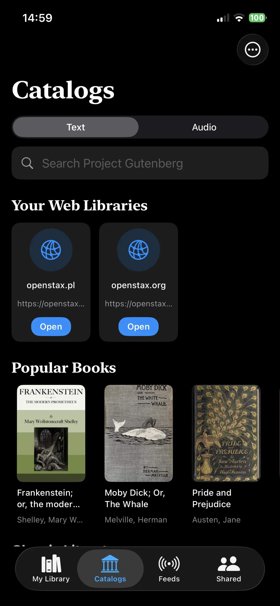
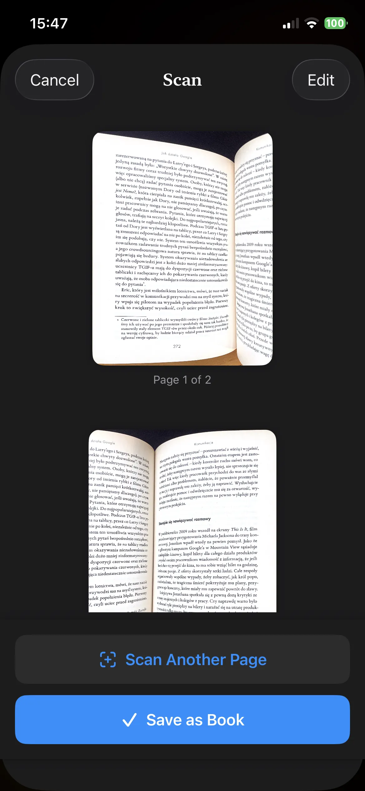
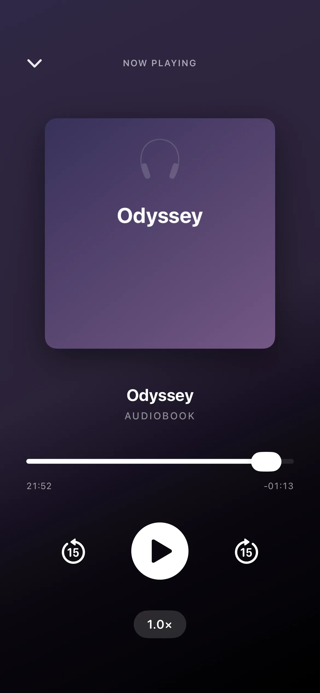
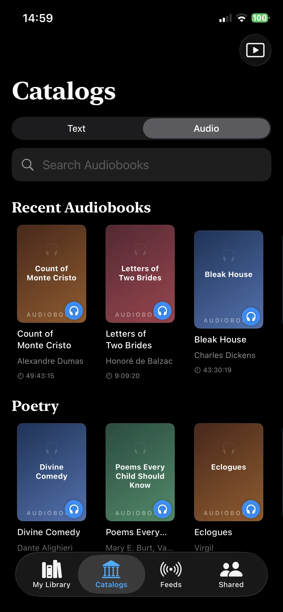
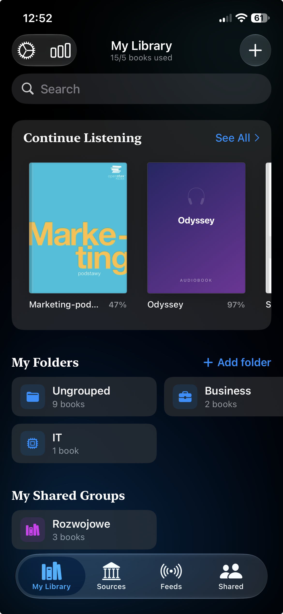

Free
A simple way to see whether Chitneek belongs in your routine.
- Up to 3 books or documents at a time
- Basic reading and listening
- Imported files in one library
Chitneek · read and listen
Turn PDFs, EPUBs, scanned pages, videos, and your own audio into one calm listening library. Natural voices can work entirely offline.
Free plan available · 7-day free trial · one-time purchase option · iPhone
01 · Bring it in
Add a book, import a document, paste a video link, or scan a page. Chitneek keeps different kinds of content together, so you spend less time moving files between separate apps.


02 · Listen your way
Chitneek gives written and recorded material the same calm listening experience. Pick up where you stopped, change the pace, and keep listening while you walk, travel, or do something else.

Chitneek can use high-quality voices directly on your iPhone. Your text does not need to leave the device, and listening can continue while commuting, travelling, or reading a private document offline.
Offline voices are available for Polish, English, German, and French.
Voice availability can vary by device and selected language.
03 · Keep your place
Chitneek remembers where you paused and keeps books, documents, and recordings together. Open the app after an hour or a week and carry on without hunting for the right file.


Choose what fits
Begin with a small library at no cost. Move to full access when Chitneek becomes part of how you read and listen.
A simple way to see whether Chitneek belongs in your routine.
For a larger library and the complete listening experience.
Current monthly, yearly, and lifetime prices are shown in the App Store. Eligible subscriptions include a 7-day free trial.
Questions
Yes. The free plan lets you keep up to three books or documents at a time and try the core reading and listening experience. Full access is available through monthly, yearly, or lifetime options.
Yes. Downloaded audio and supported on-device voices can work entirely offline, so you can keep listening without sending the text to an online service.
Chitneek supports common reading and listening formats including PDF, EPUB, MP3, and MP4. You can also work with scanned pages, recordings, and supported video sources.
High-quality offline voices are available for Polish, English, German, and French. The exact voices available can depend on your device and language settings.
Yes. Use the built-in scanner to capture a page, recognize its text, and add it to your library for reading or listening.
Shared groups let people organize and access a collection together. They are useful for families, study groups, or anyone collecting material around the same topic.
Chitneek is currently designed primarily for iPhone. It may run on compatible iPads, but the experience is not yet specifically designed for the larger screen.
Bring the things you want to read into one library and listen whenever your hands or eyes are busy.